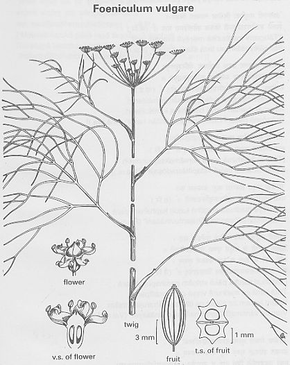

|
ECONOMICALLY
IMPORTANT PLANTS OF INDIA |
| Under-utilized Food and Fodder species and their wild relatives | Contributed by Ms.M.L Annapurna And Dr. Dhanapal, UAS, Bangalore |
Foeniculum vulgare Mill.
Taxonomic
Details

----- Correct Name
----- Classification
----- Synonyms
----- Common Names
Other Biological Details
----- Habit and Habitat
----- Diagnostic Features
----- Reproductive Biology
---------- Breeding System
---------- Phenology
---------- Pollinators
---------- Seed Biology
----------Seed Germination
------ Cultivation
----- Major Pests and Diseases
Economic Potential and Uses
----- Parts Used
----- Uses
----- Harvesting Practices
----- Produce and Products
----- Chemistry
----- Processing Techniques
----- Other uses
----- Economic Potential to the
Country
----- Export Potential
Miscellaneous Information
Literature
Correct
Name :
Foeniculum vulgare Mill.
Family : Umbelliferae
Synonyms : Foeniculum officinale (All.)
Common Names :
English: Common fennel, Fennel,
Hindi: Badishep, Barishaunf, Saumph, Sonf. Sounf
Bengali: Madhurika, Mauri,
Malayalam: Perincirakam, Preumjirakam
Tamil: Saunf, Shombu, Sohikirai, Perumcheeragam, Sohikire, Sompu,
Telugu: Misreya, Peddajilakarra,
Kannada: Badhesoppu, Dodda sompu,
HABIT
& HABITAT:
An evergreen perennial
growing to 1.5m by 1m . It is found in the cultivated fields and Plains,
cultuivated gardens, Roadsides and Run wild.
Country: India
Zone: Central, South and Westzone.
State:
District:
Availability
:
Status :
DIAGNOSTIC
FEATURES
It is not a frost tender. It is in leaf all year. and are pollinated by Insects.
It is noted for attracting wildlife.
REPRODUCTIVE
BIOLOGY
The scented flowers are
hermaphrodite (have both male and female organs)
Breeding
System :
Phenology :
The flowering occurs during
October-December (01) and also during
January-May (02).
Pollinators:
The plant is self-fertile and is known to be pollinated by insects.
Seed Biology :
Seed Germination:
Seed - best sown in early spring in situ. The seed can also be sown in situ in
the autumn. In many gardens it self sows freely. Division in March as the new
growth appears. The plants are very tolerant of disturbance, we have found
divisions to take well at any time of the year, though these divisions are never
as good as seed-sown plants.
Cultivation:
The plant prefers light (sandy), medium (loamy) and heavy (clay) soils and
requires well-drained soil. The plant prefers acid, neutral and basic (alkaline)
soils. It cannot grow in the shade. It requires dry or moist soil and can
tolerate drought. The plant can tolerates strong winds but not maritime
exposure.
An easily grown plant, it succeeds in most soils but prefers a sunny dry
position. It grows well in sandy soils and
is drought tolerant once established. Plants often self-sow freely in the
garden. Plants can be grown in quite coarse grass, which can be cut annually in
the autumn .
Although hardy in most
parts of
Fennel is often cultivated in the herb garden for its edible and medicinal uses, there are some named varieties. Especially in mild winters, the leaves can be available all year round. It is best to cut a few plants back to ground level occasionally during the growing season, thus ensuring a constant supply of fresh young shoots. In a dry summer make sure that you water the cut-down clump or it might not regrow that year. Fennel is also grown commercially as a medicinal plant and for its essential oil.
Fennel is in general a poor companion plant in the garden. It inhibits the growth of nearby plants, especially beans, tomatoes and kohl rabi. It is itself inhibited by wormwood and coriander. However, the flowering plant attracts beneficial insects such as bees, parasitic wasps, tachinid flies and hoverflies to the garden. The presence of these creatures will help to maintain a natural balance of insects in the garden and help prevent infestations by aphis etc.
It is best not to grow
fennel and dill (Anethum graveolens) close to each other since hybridisation can
occur and the resulting seedlings will be of indeterminate flavour .
MAJOR
PESTS & DISEASES
Pests:Thrips.
Diseases:
Parts
used:
Leaf,
Root, Seed and Stem.
· Leaves - raw or cooked. A delicious aniseed flavour, the young leaves are best since older ones soon become tough. They are often used as a garnish on raw or cooked dishes and make a very pleasant addition to salads. They help to improve digestion and so are particularly useful with oily foods. The leaves are difficult to store dried, though this does not really matter since they can often be harvested all year round, especially if the plants are in a warm, sheltered position.
· Leaf stalks and flower heads - raw or cooked. A similar aniseed flavour to the leaves.
· The aromatic seeds are used as a flavouring in cakes, bread, stuffing’s etc. They have a similar flavour to the leaves and also improve the digestion. The sprouted seeds can be added to salads. An essential oil from the fully ripened and dried seed is used as food flavouring in similar ways to the whole seed.
· Root - cooked. Somewhat parsnip-like. The leaves or the seeds can be used to make a pleasant-tasting herbal tea.
Harvesting Practices
The crop is ready in about 5-6 months time and is harvested before the fruits
are full ripe to avoid shattering.The individual umbels are cut and spread out
in loose bundles to dry in the sun for 4-5 days.Dried fruits are then thrashed
out and cleared by winnowing.
Produce and Products
Dye; Essential; Repellent; Strewing.
2.The
dried plant is an insect repellent, the crushed leaves are effective for
keeping dogs free of fleas. The plant was formerly used as a strewing herb.
Yellow and brown dyes are obtained from the flowers and leaves combined.
3.Medicinal
Uses: Fennel has a long history of herbal use and is a commonly used
household remedy, being useful in the treatment of a variety of complaints,
especially those of the digestive system. The seeds, leaves and roots can be
used, but the seeds are most active medicinally and are the part normally
used. An essential oil is often extracted from the fully ripened and dried
seed for medicinal use, though it should not be given to pregnant women.
4.The
plant is analgesic, anti-inflammatory, antispasmodic, aromatic, carminative,
diuretic, emmenagogue, expectorant, galactogogue, hallucinogenic, laxative,
stimulant and stomachic. An infusion is used in the treatment of
indigestion, abdominal distension, stomach pains etc[254]. It helps in the
treatment of kidney stones and, when combined with a urinary disinfectant
like Arctostaphylos uva-ursi, makes an effective treatment for cystitis. It
can also be used as a gargle for sore throats and as an eyewash for sore
eyes and conjunctivitis. Fennel is often added to purgatives in order to
allay their tendency to cause gripe, and also to improve the flavour. An
infusion of the seeds is a safe and effective cure for wind in babies.
5.An
infusion of the root is used to treat urinary disorders.
6.An
essential oil obtained from the seed is used in aromatherapy. Its keyword is
'Normalising' . The essential oil is bactericidal, carminative and
stimulant.
Back to Top
Economical
Potential to the country
PFAF Web Pages:
This plant is mentioned in the following web pages
PFAF Catalogue: Checklist of plants
Winter Salads
·PFAF Plant Catalogue (F)
Web
References
1.
2.
Data
(Latin & Common names, other references) from the BONAP's Synonymized
Checklist of the Vascular Flora of the United States, Puerto Rico, and the
Virgin Islands.
3.
Details
of Scandanavian and European Common names in Henriette's names database
4.
Details of
Medicinal Uses, Habitats, etc. in M. Grieve A Modern Herbal (1931) [4]
5.
Data.
(uses, distribution, wetland) from the UDSA's plants database.
6. Details of Scandanavian and European Common names in
Henriette's names database
7.
Ethnobotany
Data (common names, uses, countries) from the Ethnobotany Database (sadly ftp
only. The searchable web pages have been pulled).
8.
Images from
the CalPhoto database.
9. Images
from the Vascular Plant Image Gallery of the Texas A&M Bioinformatics
Working Group.